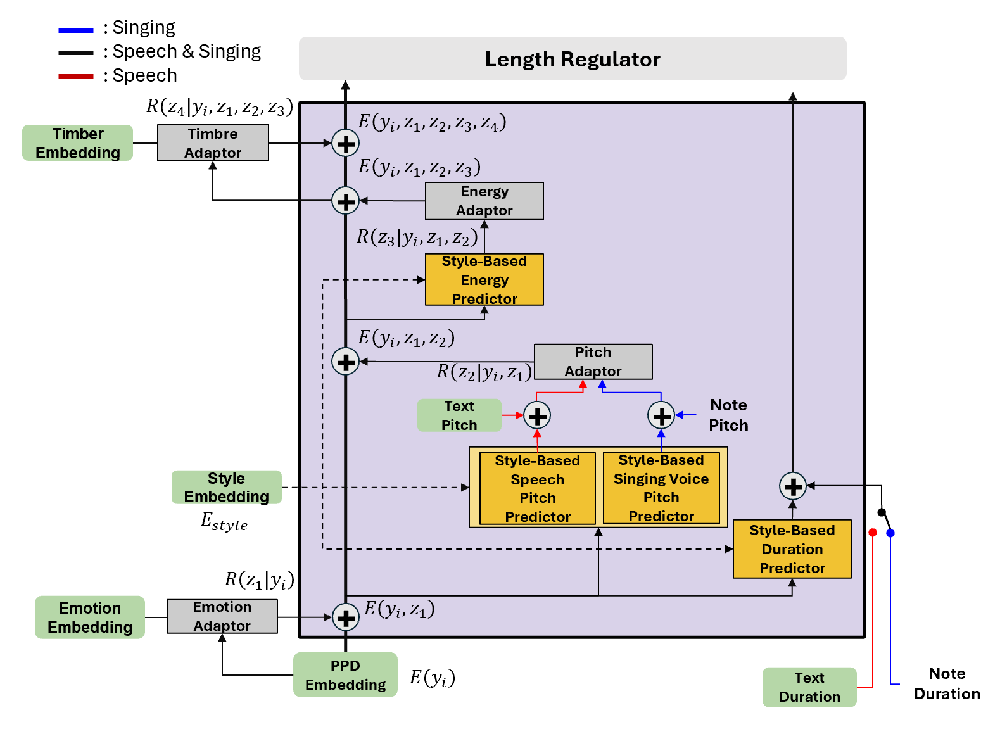

Unified Speech and Singing Voice Synthesizer Controlling Timbre, Style, and Emotion
We propose a novel unified voice synthesizer, Speak&Sing, that synthesizes speech and singing voices, reflecting the timbre, style, and emotion of the speaker or singer. Speak&Sing is trainable with separate speech and singing voice datasets, transferring the timbre of the speech dataset to singing voice synthesis, and vice versa. It resolves the discrepancy between TTS and SVS in their inputs by estimating text pitch and text duration from the text transcript, using them as proxies for note pitch and note duration. Speak&Sing accurately represents the pronunciation of both speech and singing voices through phoneme-pitch-duration (PPD) embeddings. Speak&Sing expresses timbre by adding a timbre embedding to the PPD embeddings, and emotion and style by adding variances to pitch, energy, and duration. To address the difference in the distribution of acoustic features and in the way style and emotion are expressed, it first estimates the main trends of pitch and duration from the note pitch/duration for SVS and from the text pitch/duration for TTS, and then expresses style and emotion by adding variances in pitch and duration. In experiments, Speak&Sing seamlessly synthesized speech and singing voice, successfully transferring timbre across domain. It also exhibited improved audio quality and expressiveness compared to the baseline models. Up to our knowledge, Speak&Sing is the first expressive unified speech and singing voice synthesizer for non-tonal languages that does not rely on a large language model.
Model Overall Structure
Please listen to the samples, focusing on expressiveness and fidelity.
Samples of speech
| G.T. | PITS | Speak&Sing |
|---|---|---|
Samples of singing voice
| G.T. | VISinger2 | Speak&Sing |
|---|---|---|
Style-based attribute adaptor controls the speech style and timbre separately.
Please listen to the samples focusing on speech style (e.g. intonation, speech speed) and timbre
which have high similarity with reference samples
The audio samples are corresponding to figure 5 in the paper. Please check more details of the figure in the paper.
| Reference sample for timbre | Reference sample for style | Synthesized by proposed model |
|---|---|---|
We can transfer the domain (speech/singing voice) by style-based attribute adaptor
Please listen to the sample, focusing on timbre which have high similarity with reference samples.
| G.T sample of speaker | Synthesized voice with same timbre of G.T. | Reference sample for timbre | Synthesized voice with timbre from different domain |
|---|---|---|---|